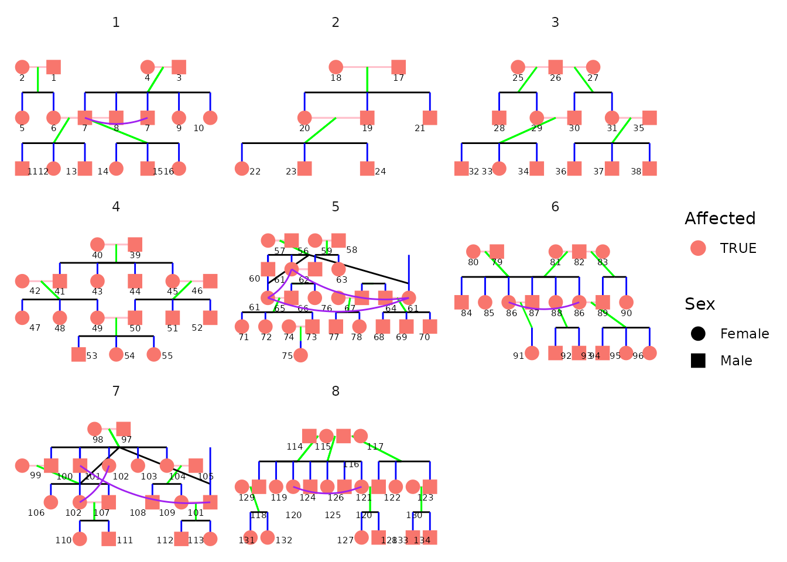

Introduction
This vignette demonstrates pedigree visualisation with
ggPedigree() from ggpedigree. Internally,
ggPedigree() leverages helpers from both {BGmisc}
(ped2fam(), recodeSex()) and {ggpedigree}
(calculateCoordinates(),
calculateConnections()), and returns a standard
ggplot2 object, so any familiar ggplot syntax can be added
afterward.
We illustrate usage with two bundled data sets:
potter– extended wizarding familyhazard– historical royalty
Basic usage
library(ggpedigree) # ggPedigree lives here
library(BGmisc) # helper utilities & example data
library(ggplot2) # ggplot2 for plotting
library(viridis) # viridis for color palettes
library(tidyverse) # for data wrangling
data("potter")
ggPedigree(potter,
famID = "famID",
personID = "personID"
)
ggPedigree() automatically:
reshapes the data by family (
ped2fam()),recodes sex (
recodeSex()),computes node layout (
calculateCoordinates()), anddraws spouse, parent, sibling, and offspring links (
calculateConnections()).
The result is a ggplot2 object, so you can add any
ggplot syntax to it.
Customizing the plot
All aesthetics reside in a config list; anything you omit falls back to the default.
ggPedigree(
potter,
famID = "famID",
personID = "personID",
config = list(
code_male = 1,
sex_color = FALSE,
spouse_segment_color = "pink",
sibling_segment_color = "blue",
parent_segment_color = "green",
offspring_segment_color = "black"
)
)
Because the result is just a ggplot object, regular layering applies:
ggPedigree(potter,
famID = "famID",
personID = "personID"
) +
theme_bw(base_size = 12)
Additional customization
You can also add affected/unaffected status to the plot. The
status_col argument allows you to specify a column in your
data frame that contains the affected/unaffected status of each
individual. This column should be a factor or character vector, and
ggPedigree() will automatically recode it to a factor if
necessary.
When you add the status_col argument,
ggPedigree() will automatically color the affected
individuals in one color and the unaffected individuals in another. You
can indicate what the values of the affected/unaffected status are in
your data frame using the affected and
unaffected arguments in the config list. By
default, ggPedigree() will overlay the affected individuals
with a different shape, but you can customize this as well.
data("hazard")
p <- ggPedigree(
hazard, # %>% mutate(affected = as.factor(ifelse(affected == TRUE, "affected", "uneffected"))),
famID = "famID",
personID = "ID",
status_col = "affected",
config = list(
code_male = 0,
sex_color = TRUE,
affected = TRUE,
unaffected = FALSE,
affected_shape = 4
)
)
p
If you set sex_color to FALSE, the affected values will be filled with the default color palette.
ggPedigree(
hazard,
famID = "famID",
personID = "ID",
status_col = "affected",
config = list(
code_male = 0,
sex_color = FALSE,
affected = TRUE,
unaffected = FALSE
)
)
Multiple families in one graphic
If you have multiple families in your data frame, you can use the
facet_wrap() function from ggplot2 to create
separate plots for each family. This is useful if you want to compare
the pedigrees of different families side by side.
Facet to separate distinct pedigrees, note that you can use
scales = "free_x" to allow each family to have its own
x-axis scale.
p +
facet_wrap(~famID, scales = "free_x")
Changing the layout
p +
theme_bw(base_size = 12) +
theme(
panel.grid.major = element_blank(),
panel.grid.minor = element_blank(),
panel.background = element_blank(),
axis.line = element_line(colour = "black"),
axis.text.x = element_blank(),
axis.text.y = element_blank(),
axis.ticks.x = element_blank(),
axis.ticks.y = element_blank(),
axis.title.x = element_blank(),
axis.title.y = element_blank()
) + scale_color_viridis(
discrete = TRUE,
labels = c("Female", "Male", "Unknown")
)
#> Scale for colour is already present.
#> Adding another scale for colour, which will replace the existing scale.